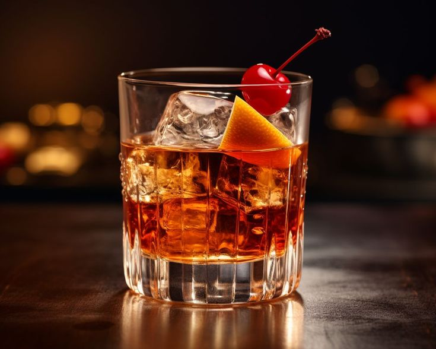
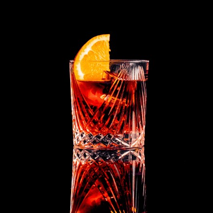
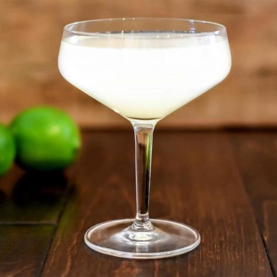
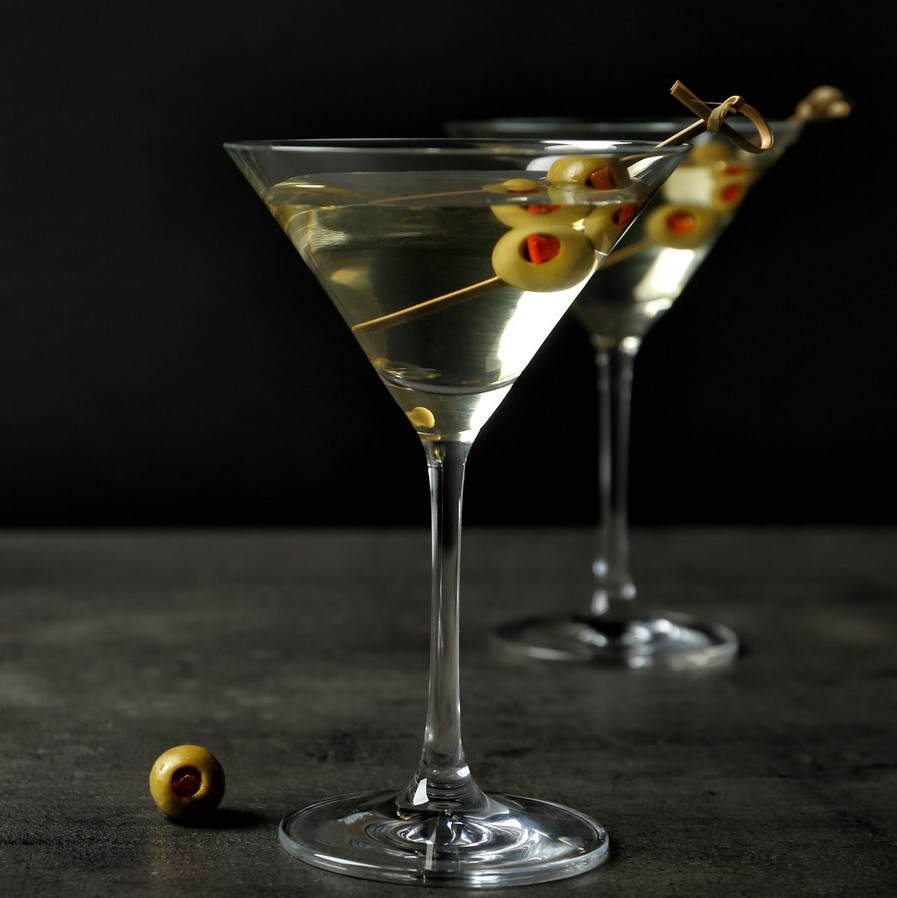
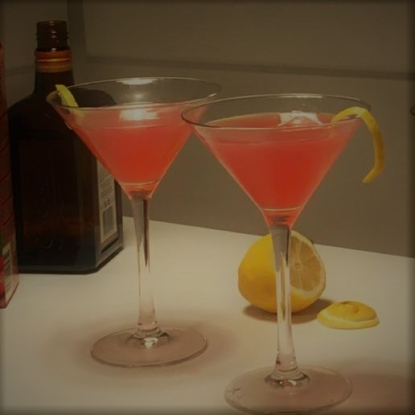
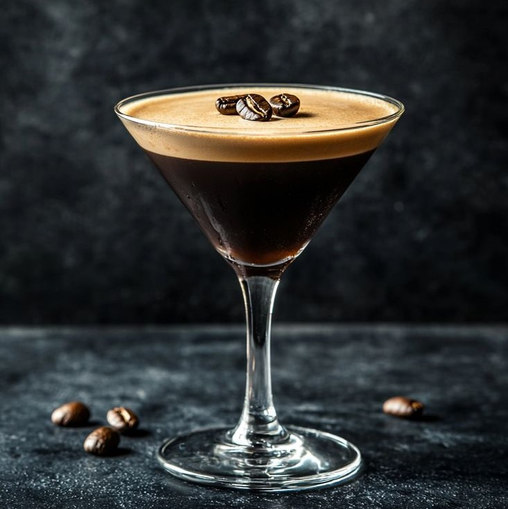
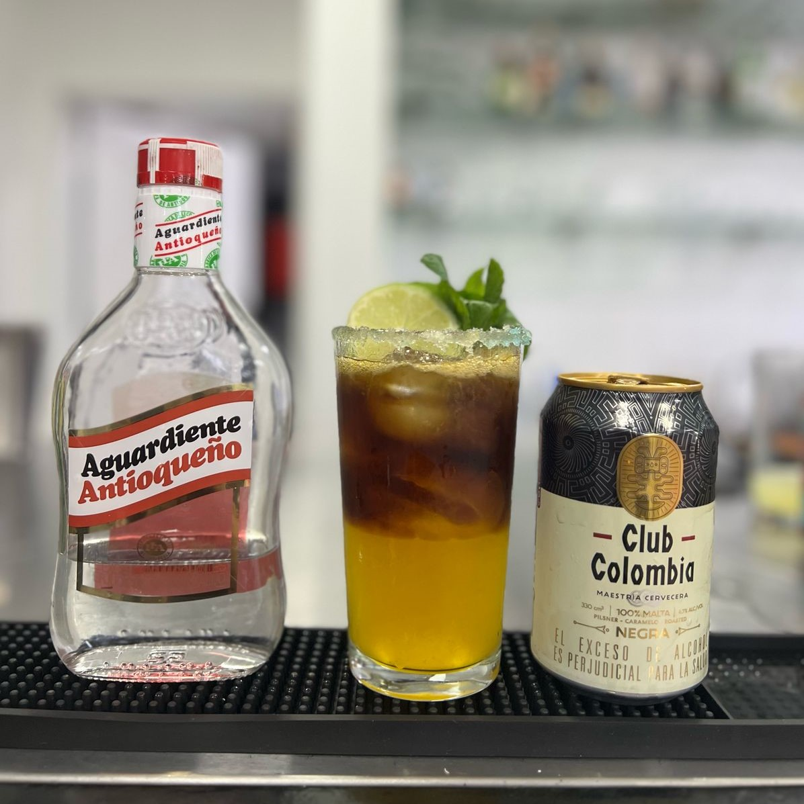
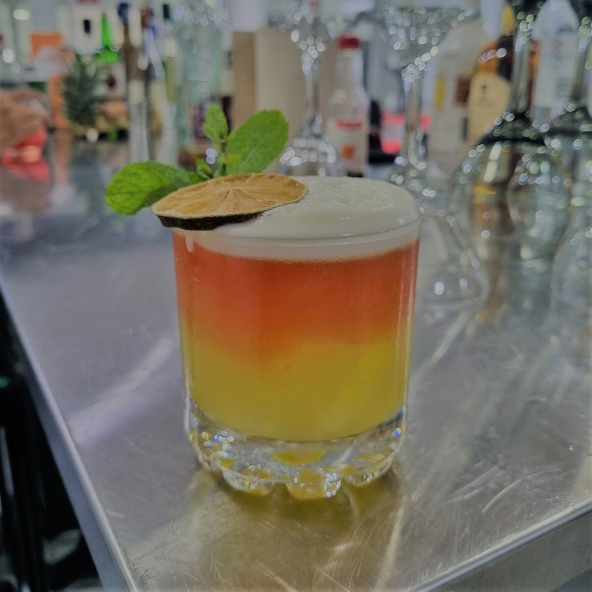

COCKTAILS
La coctelería es el arte de mezclar bebidas con precisión, creatividad y equilibrio, transformando simples ingredientes en experiencias sensoriales únicas. Desde los clásicos como el Martini o el Negroni, hasta los tropicales como el Mai Tai y la Piña Colada, los cócteles se dividen en categorías que incluyen aperitivos, digestivos, refrescantes, dulces y secos; y por epocas: clásicos, modernos o nueva era. Cada trago cuenta una historia: algunos despiertan, otros relajan, pero todos seducen con su color, aroma y sabor. Es alquimia líquida, donde cada sorbo revela el ingenio del bartender y el espíritu del lugar. ¿Listo para descubrir el tuyo?
CÓCTELES CLÁSICOS
Los cócteles clásicos son las joyas atemporales de la coctelería:
recetas nacidas entre el siglo XIX y mediados del XX que resisten el paso del tiempo por su equilibrio,
elegancia y carácter. Combinan pocos ingredientes, pero lo hacen con precisión quirúrgica: el amargor del Negroni, la sobriedad del Old Fashioned, la frescura del Daiquiri o la sofisticación del Martini. Son la base sobre la que se construyó todo lo demás, la esencia del bar en su forma más pura.
Conocerlos no es solo beber historia, es entender el alma del cóctel.
| OLD FASIONED |
| Ilustración |
Ingredientes |
Preparación |
|  |
- Whisky Bourbon:****60ml
- Dash de angostura:*3
- Syrope simple:*****10ml
|
- Metodo directo.
- Poner todos los ingresientes en un vaso,
con abuntante hielo y refrezcar.
- Decorar con roja de naranja y una cereza.
|
| NEGRONI |
| Ilustración |
Ingredientes |
Preparación |
|  |
- Ginebra:******30ml
- Campari:******30ml
- Vermut dulce:*10ml
|
- Metodo: Directo.
- Poner todos los ingresientes en un vaso,
con abuntante hielo y refrezcar.
- Decorar con roja de naranja.
|
| DAIQUIRI |
| Ilustración |
Ingredientes |
Preparación |
|  |
- Ron blanco:*60ml
- Syrope simple:*20ml
- zumo de limón:*30ml
|
- Metodo: En coctelera.
- Poner todos los ingresientes en un la coctelera y agitar por 15 segundos.
- doble colar.
- Decorar con roja de limón.
|
| DRY MARTINI |
| Ilustración |
Ingredientes |
Preparación |
|  |
- Gin:**********60ml
- Dry vermouth:*10ml
|
- Metodo: Mixing glass.
- Poner hielo en el mixing glass, agrgar los ingresientes.
- refrescar por 15 0 20 segundos.
- Usando un colador julep u oruga, servir.
- Decorar con una aceituna o piel de limón
|
CÓCTELES MODERNOS
Los cócteles modernos son la evolución del arte clásico:
audaces, creativos y hechos para sorprender. Nacidos en bares de autor y culturas urbanas,
mezclan ingredientes exóticos, técnicas innovadoras y una estética provocadora.
Desde el Cosmopolitan hasta el Espresso Martini, estos tragos rompen reglas sin perder equilibrio.
Son el punto donde la tradición se encuentra con la experimentación,
y cada sorbo cuenta una historia nueva, vibrante y sofisticada. Ideal para quienes buscan algo más que solo beber:
buscan una experiencia.
| COSMOPOLITAN |
| Ilustración |
Ingredientes |
Preparación |
|  |
- vodka:*********60ml
- Cointreau:*****15ml
- zumo de limón:*15ml
- cranberry:*****30ml
|
- Metodo: En coctelera.
- Poner todos los ingresientes en un la coctelera y agitar por 15 segundos.
- doble colar.
- Decorar con piel de limón.
|
| ESPRESSO MARTINI |
| Ilustración |
Ingredientes |
Preparación |
|  |
- vodka:*********50ml
- Kahlúa:********35ml
- Syrope simple:*10ml
- Café espresso:*30ml
|
- Metodo: En coctelera.
- Poner todos los ingresientes en un la coctelera y agitar por 25 segundos.
- doble colar.
- Decorar con granos de café.
|
CÓCTELES COMTEMPORÁNEOS
Los cócteles contemporáneos son la vanguardia líquida de la coctelería:
innovadores, provocadores y diseñados para sorprender. Surgen del talento de bartenders visionarios que
combinan técnicas de cocina molecular, ingredientes artesanales y presentaciones impactantes.
Aquí, un humo de romero, una esfera de licor o una espuma de jengibre no son decoración, sino parte esencial del sabor. No siguen recetas, cuentan historias. Cada cóctel contemporáneo es una experiencia multisensorial que transforma el acto de beber en un ritual de descubrimiento.
Son arte en copa, efímero pero inolvidable.
| POLOMBIA |
| Ilustración |
Ingredientes |
Preparación |
|  |
- Aguardiente:*********30ml
- Almibar de maracuya:*30ml
- Zumo de limón:*******20ml
- Tabasco:*************1 dash
- Club colombia negra:*1 und
|
- Metodo: En coctelera.
- Poner todos los ingresientes en un la coctelera y agitar por 15 segundos.
- Servir en vaso largo.
- Terminar con la cerveza
- Decorar con rodaja de limón y hierbabuena.
|
| FUEGO TROPICAL |
| Ilustración |
Ingredientes |
Preparación |
|  |
- Aguardiente:*********30ml
- Tequila:*************30ml
- Almibar de maracuya:*10ml
- Clara de huevo:******1 und
- Jugo de arandanos:***30ml
|
- Metodo: En coctelera.
- Poner todos los ingresientes,exepto el jugo de arandanos en un la coctelera y agitar por 15 segundos.
- Servir en roquero.
- Poner suavemente el jugo de arandanos para obtener un buen efecto visual
- Decorar con rodaja de limón y hierbabuena.
|